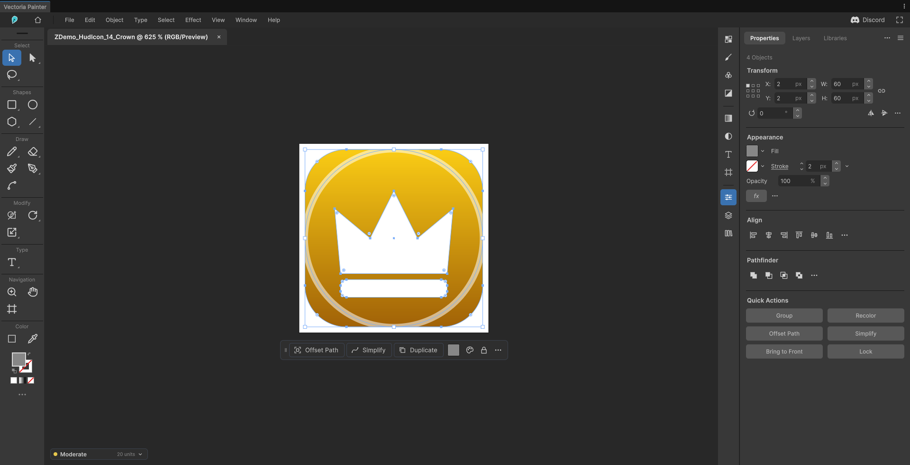

Vectoria Painter (Editor)
The vector editor for .vpaint documents.
Vectoria Painter is a vector editor window inside the Unity Editor, similar to Illustrator or Inkscape. You draw icons and illustrations with shapes, pens and layers, and save them as .vpaint documents in your project. Because the artwork stays vector, you do not export a PNG for every size. You draw once, then show it in your UI with the Vectoria Image component (see Quick Start).
The basic flow
- Open the painter and create a document (
File › New Document). - Draw with the tools on the left (see Drawing Tools), and save as a
.vpaintinsideAssets. - Assign the
.vpaintto a Vectoria Image in your scene. No export is needed. (Exporting PNG or SVG files is optional, see Documents.)
Opening it
Tools › Vectoria › Open Vectoria Painter- Double-click a
.vpaintfile, or right-click it and chooseOpen in Vectoria(this opens the same painter window).
The window
Tools are on the left, the canvas is in the middle, and the panels are on the right. Open documents appear as tabs above the canvas. The menu bar holds File, Edit, Object, Type, Select, Effect, View, Window and Help.

- Toolbar (left): selection, shapes, drawing, modify, type, navigation and colour tools.
- Panels (right): Properties, Layers and Libraries share one dock, and the icon column beside it switches to other panels. Properties shows position, size, fill and stroke of the selection, or document settings when nothing is selected.
- Contextual task bar: a small floating bar that appears under the selection with shortcuts: offset path (grow or shrink an outline), simplify (fewer points) and duplicate.
- Bottom left: a cost meter that rates how heavy the artboard is to draw. See Interface.
- Bottom right: a Creative or Developer mode badge. Creative is the default and shows every tool. Developer hides what the game cannot show. See Creative and Developer Mode.
Learn more
- Interface: the window, panels and preferences
- Creative and Developer Mode: draw everything, or only what the game can show
- Drawing tools: selecting, drawing, shapes, type, modifying and measuring
- Documents, artboards and SVG: layers, artboards, SVG in and out, image trace
Done drawing? Vectoria Image shows the artwork on screen.